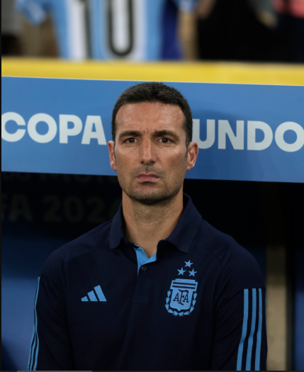

Lionel Scaloni es el actual director técnico de la Selección Argentina y uno de los más exitosos de su historia reciente. Bajo su conducción, el equipo conquistó la Copa América 2021, la Finalissima 2022, Copa America 2024 y el máximo logro: la Copa Mundial de la FIFA 2022. Su ciclo se destaca por la renovación del plantel, el equilibrio táctico y la construcción de un grupo sólido que devolvió a la selección a lo más alto del fútbol mundial.
Partidos Drigidos: 70
Victorias: 50
Empates: 15
Derrotas: 10